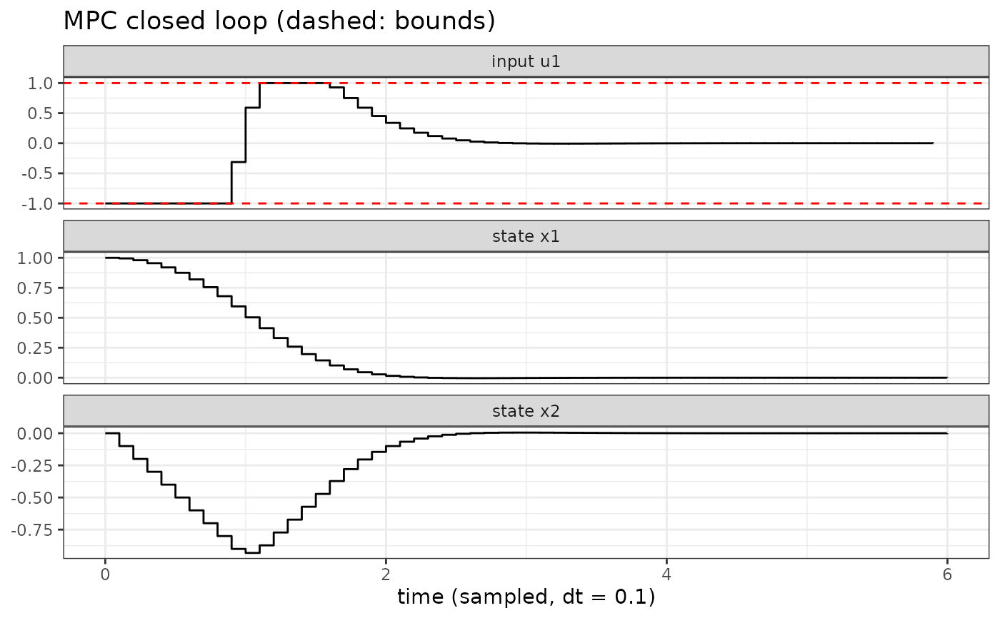

Define a constrained linear MPC controller for a discrete time model \(x_{k+1} = A x_k + B u_k + d_k\), \(y_k = C x_k + D u_k\). At each sample the controller solves $$\min \sum_{k=0}^{N-1} \Big[\|x_k - x^r_k\|_Q^2 + \|u_k - u^r_k\|_R^2 + \|y_k - y^r_k\|_{Q_y}^2 + \|\Delta u_k\|_{R_d}^2\Big] + \|x_N - x^r_N\|_P^2 + \rho \text{ (slack penalties)}$$ subject to \(x_0 = x(t)\), the dynamics, input bounds on \(u_k\), rate bounds on \(\Delta u_k = u_k - u_{k-1}\) (with \(u_{-1}\) the previously applied input), state bounds on \(x_1, \ldots, x_N\), output bounds on \(y_1, \ldots, y_N\) (using \(u_{N-1}\) for the feedthrough at \(k = N\)) and, when the bounded outputs have direct feedthrough, on \(y_0 = C x_0 + D u_0\), an optional terminal constraint, and \(u_k = u_{N_c - 1}\) for \(k \ge N_c\) (control horizon). Only \(u_0\) is applied (receding horizon).
Usage
ctrl_mpc(
plant,
horizon,
Q,
R,
P = "Q",
control_horizon = horizon,
Rd = NULL,
Qy = NULL,
u_min = -Inf,
u_max = Inf,
du_min = -Inf,
du_max = Inf,
x_min = -Inf,
x_max = Inf,
y_min = -Inf,
y_max = Inf,
soft = character(),
soft_weight = c(1000, 10000),
terminal = c("none", "equality"),
terminal_set = NULL,
solver_settings = list(),
accept_inaccurate = FALSE
)Arguments
- plant
Discrete time
ctrl_ssmodel. Continuous models must be discretized first withctrl_c2d().- horizon
Prediction horizon
N.- Q
State weight (scalar, vector or matrix).
- R
Input weight (scalar, vector or matrix).
- P
Terminal weight: a matrix,
"Q"(default, same asQ) or"lqr": the DARE solution for the stage cost \(x^\top Q x + u^\top R u + y^\top Q_y y\) with \(y = Cx + Du\) (absolute output weighting, no reference). The move penaltyRdis not part of this cost, so withRdthe terminal weight no longer equals the infinite-horizon cost to go.- control_horizon
Number of free input moves
Nc(defaultN).- Rd
Weight on input increments.
- Qy
Weight on output tracking errors.
- u_min, u_max, du_min, du_max, x_min, x_max, y_min, y_max
Bounds (scalars are recycled;
-Inf/Inffor none).- soft
Which bounds are soft: any of
"states","outputs".- soft_weight
Quadratic and linear slack penalties
c(rho_q, rho_l).- terminal
"none"or"equality".- terminal_set
Optional list
list(H = , h = )for the polyhedral terminal constraint \(H (x_N - x^r_N) \le h\).- solver_settings
List of OSQP settings (see
osqp::osqpSettings()); defaults are tight tolerances with polishing.- accept_inaccurate
Accept the OSQP status
"solved inaccurate".
Details
Indexing. Decision variables are \(x_0, \ldots, x_N\), \(u_0, \ldots, u_{N-1}\) and slack variables, in this order. The input \(u_k\) acts between \(x_k\) and \(x_{k+1}\), so the first predicted state affected by the current decision is \(x_1\).
QP. The problem is assembled once as a sparse QP in OSQP form
\(\min \frac12 z^\top H z + q^\top z\), \(l \le A_c z \le u\); at
each sample only q, l and u change, and the OSQP workspace is
reused with warm starts. Convexity is verified before the solver is
called: Q, P, Qy and Rd must be positive semidefinite and R
positive semidefinite with R + Rd positive definite, so the objective
is convex and strictly convex in the inputs.
Soft constraints. With soft = "states", "outputs" or
c("states", "outputs"), the corresponding bounds become
\(x_{\min} - s \le x \le x_{\max} + s\), \(s \ge 0\), penalized by
\(\rho_q s^2 + \rho_l s\). A large linear weight \(\rho_l\) gives an
exact penalty: the soft constraints are satisfied whenever the hard
problem is feasible. Input and rate bounds are always hard.
Stability. A successful QP solve does not imply closed-loop
stability. Nominal asymptotic stability of the unconstrained-terminal
scheme follows when P is the LQR cost-to-go (P = "lqr") and the
constraints are inactive near the origin; with active constraints one
needs a terminal set that is positively invariant under the LQR law,
which is not computed automatically. terminal = "equality"
(\(x_N = x^r_N\)) gives recursive feasibility and stability for a
constant reference only when \((x^r, u^r)\) is an admissible
equilibrium (\(x^r = A x^r + B u^r\) with \(u^r\) and \(x^r\)
strictly inside the bounds), the first problem is feasible, and the
control horizon equals the horizon with no rate bounds; otherwise the
shifted plan need not be feasible.
Examples
plant <- ctrl_c2d(ctrl_ss(matrix(c(0, 1, 0, 0), 2, byrow = TRUE), c(0, 1),
c(1, 0)), 0.1)
mpc <- ctrl_mpc(plant, horizon = 20, Q = diag(c(10, 1)), R = 0.1,
u_min = -1, u_max = 1)
step <- ctrl_mpc_step(mpc, x = c(1, 0))
step$u
#> u1
#> -1
sim <- ctrl_simulate_mpc(mpc, x0 = c(1, 0), steps = 60)
plot(sim)
